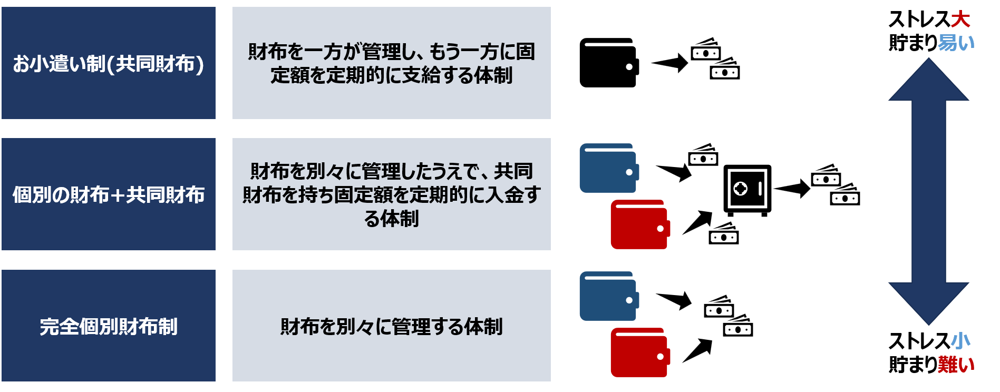

Date: 2024-09-16
人生には多額の費用が必要なイベントが幾つかありますが、それらの多くは家族関係で発生するものだと考えます。
一番わかりやすいところで言うとパートナーとの同棲や結婚、子育ての費用だと思います。
これらのお金はどこから捻出するべきなのでしょうか。
挙げた例で言えば「パートナーと話し合い、各自の個人口座から半分ずつ出す、
もしくは片方が多めに出す。」がひとつのよくあるパターンだと思います。
お金が必要になることがわかっている場合、それに備えることが大切だと思うのですが、将来お金が必要になるとわかっていても欲求に勝てない人もいます。将来のためにお金を貯められないと、
いざとなったときにお金がないことが原因でライフステージを進めることができず、パートナーとの信頼関係が崩壊するかもしれません。
上述はパートナーとの間で財布を完全に別にした場合の話です。主な家計管理体制としては、このような完全個別財布制とは別に、
お小遣い制(共同財布)や、それぞれの個別の財布+2人の共同財布を持つといった体制があります。しかしながら、それぞれの家計管理体制において、
ストレスの少なさとお金の貯まりやすさにはトレードオフの関係があります。

そこで中間策として「個別の財布+2人の共同財布を持つ」体制を選ぶとします。
この場合、共有口座を新規に開設して、そこに「毎月〇〇円入金する」といったルールを設けることで、
目標期日までに目標金額を貯蓄することを考えます。ただし前提として日本では真の意味での共有口座は開設できません。
海外ではジョイントアカウントという概念が存在し、複数人名義での銀行口座を開設可能なのですが、日本ではそれが法律上の規制によりできません。
そこで日本ではどのようにしているのかというと、どちらか片方の名義で個人口座を開設してそれを『これが俺たちの共有口座だ！！！
パートナーは毎月ここに入金すること！！！』としているだけなのです。
つまり法的には口座の名義人が所有者となるため、法的な権利は名義人に集中します。
名義人以外のパートナーがその口座に入金をすることについては、信頼関係がベースとなるわけです。
共有口座を開設する場合はこれをパートナーに伝えて了承を得る必要があると思います。
共有口座開設に関する問題はこれだけではありません。例えば毎月いくら入金すると決めていても、いつどのように入金するのでしょうか。
毎月ATMに行って入金するのでしょうか。それでは手間がかかりますし、入金を忘れていたらパートナーとのトラブルに発展するかもしれません。
また、忘れずに入金を行い順調に貯蓄していても、その内訳がわからなくなってしまうかもしれません。同棲に必要な費用や、結婚指輪購入に必要な費用、
新婚旅行に必要な費用など、2人で使うお金の用途は多岐にわたります。どの費用のためにどれだけ貯めていて、いま目標金額の何%まで達しているのかはわかりません。
『じゃあ目的別に違う銀行とかで新しく口座開設してそれぞれに入金する…？』いやいやそれは面倒です。
管理も大変です。こういった共有口座に関する問題を解消するために、各銀行は様々なサービスを展開しています。それらを調査して比較することで、
自分に合った銀行が見つかるのではないかと考えてこの記事を書きます。自分用で情報をまとめるために書いているので、間違っているところがあったら教えてください。
また調査不足や銀行の提供する機能に今後アップデートがあるかもしれないのでご留意ください。
共有口座開設の銀行を選ぶうえで重要だと思うものを以下に示します。各項目については詳細を後述します。
自動入金機能とは、他行から定期的に定額を自動で入金する機能です。
この機能がない場合、共有口座への入金は毎回ATMで手動で行う必要があります。
給与受取口座を共有口座に設定することで入金する方法がありますが、
給与すべてを共有口座に入れるわけでない限り、「個別の財布+2人の共同財布を持つ」体制においては、給与受取口座と共有口座は分けたいと考える人が多いでしょう。
また、給与受取口座を共有口座と分けていても、同じ銀行としていれば、定額自動振替機能で自動入金することはできますが、
ポイント優遇や資産運用の事情などで、給与受取口座は他の銀行で作成したいという人もいるでしょう。
それと、毎回ATMでの入金は手数料がかかる上に、うっかり忘れてしまうリスクもあります。
前節でも述べましたが、共有名義の口座が作れない日本では、共有口座は信頼関係がすべてです。
入金を忘れることは、パートナーとの信頼を損なうことに繋がりかねません。
そのため、自動入金機能は共有口座を持つうえで重要な機能であると考えます。
この機能がない場合でも他行側の自動振込機能を使えば実現できますが手数料はかかるでしょう。
貯蓄の目的は多岐にわたります。同棲に必要な費用や、結婚指輪購入、旅行費など多くの目的がありますが、どの目的のためにどれだけ貯蓄できているかを可視化できれば
その管理も楽になります。共有口座においては2人が協力して貯蓄していくものです。
また、「貯蓄」については「毎月」のようにタイミングがわかりやすいのですが、「出費」のタイミングは曖昧であることが多いでしょう。
目的別に毎月の貯蓄額を分けて管理できれば、目標金額に達した時点で出費するといった流れが明確となります。
例えば、謎タイミングでの出費によりパートナー間でトラブルになることも避けられるでしょう。
ATM利用をほとんどしない前提であればこれに関してはさほど重要ではありません。 キャッシュレス決済をメイン支払い方法として、入金も自動入金機能で行う場合、ATM自体を利用しなくなるからです。 一方で、まだまだ現金で決済をたくさんするという方や、自動入金機能のない銀行口座を共有口座とする人にとっては重要です。 ATM利用をする上では、金融機関が提携しているATMが自分の生活圏内にどれだけあるのか、またどの時間帯なら使えるのか、手数料はいくら発生するのかなど考慮すべき事項が沢山あります。 例えば、共有口座から食費や日用品の購入のために支出する場合、高頻度でATMを利用することが予想されます。 そのため共有口座を開設する銀行を選ぶときには、ATMの手軽さや手数料についても慎重になるべきです。
銀行によっては、口座開設や利用に応じてポイントが貯まるサービスを提供している場合があります。 貯まったポイントは商品券やギフト券などに交換したりすることが可能です。 共有口座の利用においても、ポイントが貯まることで日々の生活費の足しになるかもしれません。 ただし、ポイントの還元率や交換できる商品などは銀行によって大きく異なります。 どの程度のポイントが貯まり、それがどのような形で自分に還元されるのか、事前にしっかりと確認しておくことが重要です。 ポイント制度は、お金を貯めるという目的とは別に、口座利用のモチベーションを維持する上でも役立つでしょう。 共有口座では高頻度で入出金が行われたり、残高が大きくなることが予想されるので口座の利用状況を参照してポイントが貯まるようなサービスとの相性が良いのです。
その他にもセキュリティ対策やカスタマーサービスなど、共有口座を開設する銀行を比較する視点はありますが、特に大きく気にする点としては以上で十分でしょう。 後節ではこの視点で各銀行の比較を行います。銀行の比較をすっ飛ばして私の個人的な結論を見る人はこちらに飛んでください。
所感: ATM数で言えば圧倒的に多い気がするが、定額自動入金サービスはなし、そしてとにかく手続きが面倒なイメージ。 共有口座利用に適しているという感じではなさそう。他行がVポイントやPontaポイントに還元できることを考えるとゆうちょペイポイントのみの還元はやや魅力に劣る。
所感: 自動入金機能があり手数料も無料。Vポイントが貯まるため他のサービスとの連携も可能。ATMの数もそれなりにあるため、共有口座として開設するのもアリだとは思う。 ただし、Oliveアカウントはひとりひとつまでであり、給与受取口座に設定するとVポイントを200pt/月もらえるため、給与受取口座としてポイントを享受する口座として使いたい。 クレジットタッチ決済でのポイント還元率も高いので、クレジット決済をメイン支払いとする場合の共有口座としての利用に適しているが、それは個人のお買い物でも同じ話。
所感: メガバンクのためATMの数が多いが、共有口座としての運用に関してはもっと機能が欲しい。 メガバンクすべてに言えることではあるけどグループのデカさを考えると安定択のひとつであることは間違いない。
所感: メガバンク系なので安定択ではあるが、調べてみてもポイント優遇について目立ったものがなかった(調査不足の可能性あり)……
所感: 自動入金機能、目的別口座機能があり共有口座としての機能は充足している感じる。ATM利用について、最低ランクでも2回まで無料。 ATM利用を抑えた運用であれば十分であると考える。定額自動入金で30pt/月貯まるので、共有口座としての利用に相性が良い。
所感: つかいわけ口座が目的別口座の役割を持っており、ポイントもPontaポイントとして貯められるため共有口座としての利用に相性が良い。 調べた限り自動入金機能がないのが残念。
所感: 共有口座としての機能はないので一見して共有口座としての利用に魅力は少ないように思えるが、身の回りをすべて楽天グループで統一したいという方向けではある。 やや話は脱線するが、共有口座に紐づけるクレジットカードを楽天カードとして、楽天証券での投資を行い、お買い物はすべて楽天市場で済ませるという人にとっては魅力的であることに間違いない。 そのような運用であればポイントもかなり貯まるし、日用品の購入に充てることでそれ以外に使える資金も増えると思う。
Tags: Money